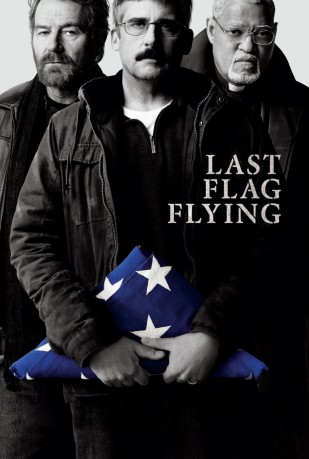

#8059 Last Flag Flying *OmU*
 
 IMDB-Wertung: 6.9 / 10
IMDB-Wertung: 6.9 / 10  Metascore: 65
Metascore: 65 
Vor 34 Jahren machten sich die Marines Sal (Bryan Cranston) und Mueller (Laurence Fishburn) gemeinsam mit dem Navy-Arzt Richard Shepherd (Steve Carell) auf den Weg, um einen 18-jährigen Straftäter ins Gefängnis zu bringen – und wurden während dieser Reise gute Freunde. Im Jahr 2003 treffen die drei ungleichen Männer wieder aufeinander – gealtert, aber mitten im Leben. Nun wartet eine neue Mission auf sie: Doc Shepherd hat seinen Sohn im Irak-Krieg verloren und will ihn in den USA bestatten lassen. Seine zwei Freunde helfen ihm dabei und begeben sich mit ihm auf die abenteuerliche Reise.
nur Englisch
Jahr: 2017
Dauer: 125 Minuten
FSK:
Land: USA Studio: Amazon StudiosTonspuren:
Untertitel:
Auflösung: 1080p (1920x1040) Größe: 10076 MB
Genre: Drama, Komödie, Krieg
Regisseur:  Richard Linklater
Richard Linklater
Drehbuch: Richard Linklater
Soundtrack: Graham Reynolds
Darsteller:
 Bryan Cranston als Sal Nealon
Bryan Cranston als Sal Nealon Laurence Fishburne als Reverend Richard Mueller
Laurence Fishburne als Reverend Richard Mueller Steve Carell als Larry 'Doc' Shepherd
Steve Carell als Larry 'Doc' Shepherd- J. Quinton Johnson als Washington
- Deanna Reed-Foster als Ruth
 Yul Vazquez als Colonel Wilits
Yul Vazquez als Colonel Wilits- Graham Wolfe als John Redman
- Jeff Monahan als O'Toole
- Dontez James als DAFB Guard
- Tammy Tsai als Mother (Irene)
 Richard Barlow als Angry Father
Richard Barlow als Angry Father- Cathy O'Dell als Grieving Mother
 Richard Robichaux als Anorak
Richard Robichaux als Anorak- Jerry Lee Tucker als Raincoat
- Kate Easton als Phone Shop Clerk
 Cicely Tyson als Mrs. Hightower
Cicely Tyson als Mrs. Hightower- Ted Watts Jr. als Leland
- Lee Harrington als Girl at Wake
 Samuel Davis als Larry Jr.
Samuel Davis als Larry Jr. Georin Aquila als Train Passenger (uncredited)
Georin Aquila als Train Passenger (uncredited) Brian Bowman als Church member (uncredited)
Brian Bowman als Church member (uncredited) Lloyd Crago als Bar Patron (uncredited)
Lloyd Crago als Bar Patron (uncredited)- Kelli Culbertson als Bar Patron (uncredited)
- Chris Dettone als Train Passenger (uncredited)
- Chris Drexel als Bar Patron (uncredited)
 Mark Falvo als Train Passenger (uncredited)
Mark Falvo als Train Passenger (uncredited)- Adam Hicks als Marine (uncredited)
 John W. Iwanonkiw als J Tinsley Amtrack Baggage Handler (uncredited)
John W. Iwanonkiw als J Tinsley Amtrack Baggage Handler (uncredited)- Daniel James als Cellphone store patron (uncredited)
- Wain Jenkins als Choir Member (uncredited)
 William Kania als Train Passenger Toting Gifts (uncredited)
William Kania als Train Passenger Toting Gifts (uncredited)- Daniel Lamont als Bar Patron (uncredited)
- Marqui Maresca als Train Announcer (uncredited)
 Tiffany Sander McKenzie als Bar Patron (uncredited)
Tiffany Sander McKenzie als Bar Patron (uncredited)- Kelly L. Moran als Mary Angry Train Passenger (uncredited)
- Christopher Nardizzi als Train Passenger (uncredited)
 Phil Nardozzi als Bus Passenger (uncredited)
Phil Nardozzi als Bus Passenger (uncredited) Dwayne Pintoff als Train Passenger (uncredited)
Dwayne Pintoff als Train Passenger (uncredited)- Sofia Plass als Church Member (uncredited)
- Gary Lee Vincent als Train Passenger (uncredited)
- Jeremy Waltman als Train Passenger (uncredited)
- Jane Mowder als Rental Truck Employee
- Marc Moore als Hyped-up Employee
- Sarah Silk als Front Desk Motel Employee
- Zoe Alexandra als Funeral Attendee (uncredited)
- Tony Amen als Bar Patron (uncredited)
- Bianca Cook als Church Member (uncredited)
- Eric Frank als Bar Patron Guy In Booth 1 (uncredited)
- Bryan Geary als Air Force / AMN Reilly (uncredited)
- Jason Gerrard als Airmen / Morales (uncredited)
Datei: X:\2017(G-M)\Last Flag Flying OmU (2017, FSK, 1920x1040).mkv seit 19.01.2018
Festplatte: HD 2017(A-Z)-2018(A-F)
 Es gibt insgesamt 148 Filme in der Gruppe '2017(G-M)'
Es gibt insgesamt 148 Filme in der Gruppe '2017(G-M)'